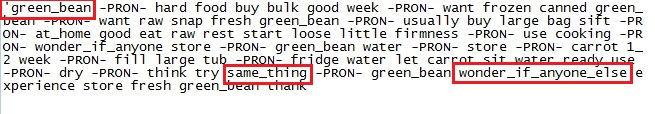

Exploratory NLP and Veggieboards.com
Paul Ton
Introduction

Scraping
- research

- plan
- two pass strategy
- proxy rotation
- MongoDB storage
- ethical considerations
Dataset
- summary
- 447,876 posts
- 21,910 threads
- 14,612 users


Dataset
- post

Dataset
- cleaned

Natural Language Processing
workflow
- text normalisation
- cleaning, tokenization, stemming / lemmatization
- phrase modeling
- dictionary creation
- Latent Dirichlet Allocation
Natural Language Processing

Discussion / Future Work
- authorship attribution
- troll detection
- deceptive opinion spam
References